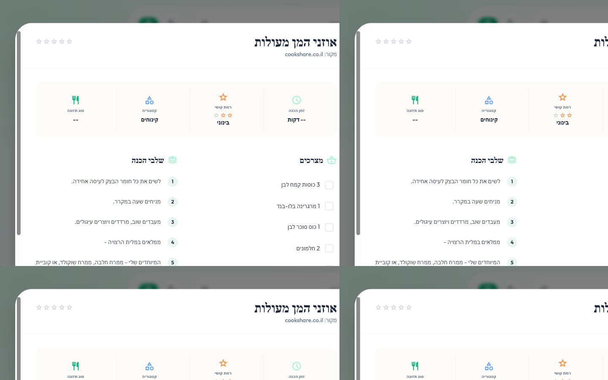
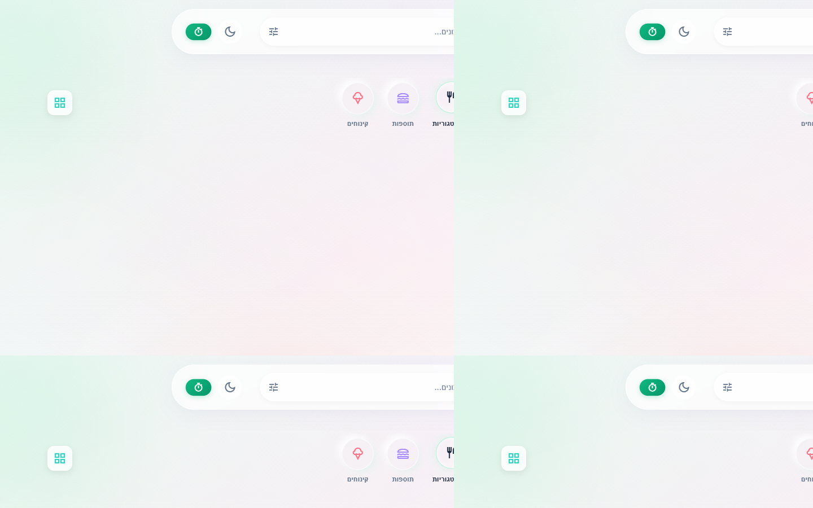
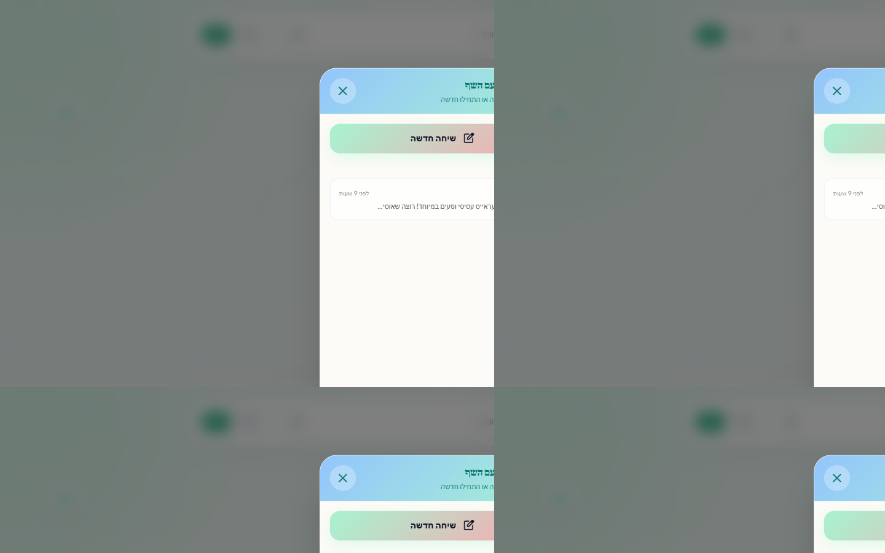
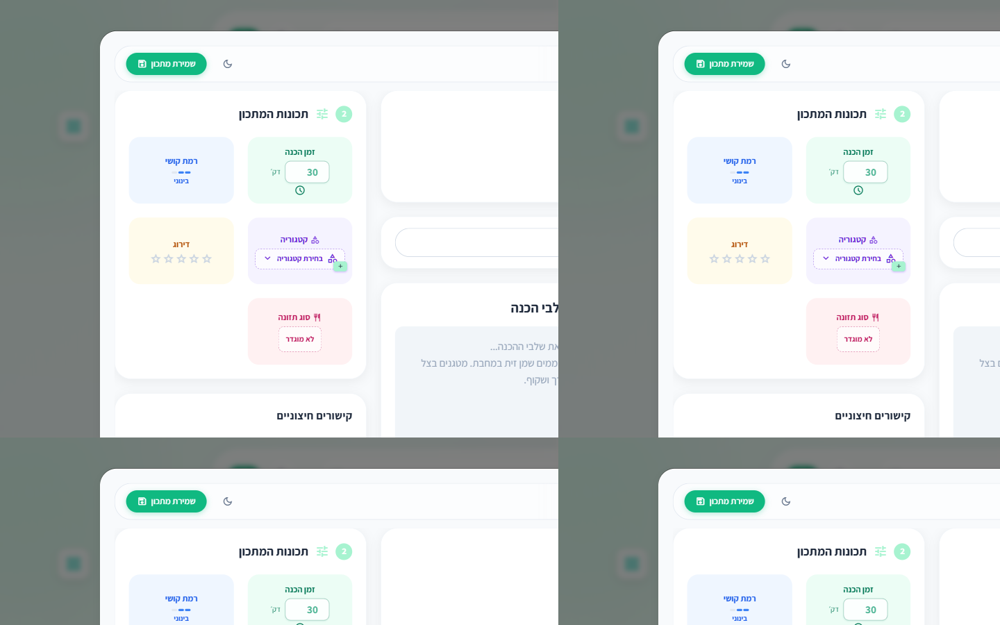

מצגת ממצאים עם צילומי מסך · דסקטופ 1440×900 · מצב בהיר
תאריך: 10 ביוני 2026 · localhost:3000 · משתמש מחובר
6 בעיות עיקריות — 2 חומרה גבוהה, 2 בינונית, 2 נמוכה
| # | בעיה | חומרה | מסך |
|---|---|---|---|
| 1 | שמות אייקונים Material נחשפים לקורא מסך | גבוהה | כל האתר |
| 2 | כרטיס מתכון שבור עם שם vchgfxd |
גבוהה | דף הבית |
| 3 | רשת צפופה מדי בדסקטופ (~7 עמודות) | בינונית | דף הבית |
| 4 | צ'אט AI ברוחב טלפון על מסך רחב | בינונית | צ'אט |
| 5 | קטגוריות — ניגודיות חלשה / אייקונים לא מתאימים | בינונית | מובייל + דסקטופ |
| 6 | שדות ריקים מציגים -- דקות ו־-- |
נמוכה | כרטיסי מתכון |
קוראי מסך מקריאים שמות אנגליים של Material Symbols במקום תוויות עבריות
account_circlerestaurant כל הקטגוריותshopping_basket מצרכים, cooking שלבי הכנהשמירת מתכון save2 tune תכונות המתכוןקבצים: js/main.js, index.html

מודל מתכון — כותרות עם שמות אייקון באנגלית
כרטיס עם שם לא תקין מופיע לצד מתכונים אמיתיים ופוגע באמון ובמראה

דף הבית — הכרטיס השבור בצד שמאל למעלה
~7 עמודות · כרטיסים ברוחב ~166px · כותרות נחתכות
minmax(220px, 1fr) ב־CSS. קובץ: css/style.css + setRecipesPerRow() ב־js/main.js.
7 כרטיסים בשורה — צפיפות גבוהה
על מסך 1440px החלון נשאר ברוחב ~400px ומשאיר שטח ריק
ai-chat-phone + max-width: 400px@media (min-width: 1024px) — הרחבה ל־480–560px או layout דו־עמודות (רשימת שיחות + צ'אט). קובץ: css/style.css שורות ~3200.

צ'אט AI — רוחב טלפוני על מסך רחב
ניגודיות חלשה במובייל · אייקונים לא תמיד תואמים לקטגוריה
lunch_dining ל"תוספות", icecream ל"קינוחים" (סביר אך לא אחיד)שורת הקטגוריות מתחת לחיפוש
שדות ריקים מציגים -- דקות וסוג תזונה --
js/main.js בתבנית כרטיס המתכון.

טופס הוספה — גם כאן יש דליפות אייקון (שמירה, OCR, tune)
נקודות חוזק שכדאי לשמר
/recipe/{id} עובד לשיתוףמודל מתכון — חוויית קריאה מצוינת
שינויים קטנים עם השפעה גדולה · ממתין לאישור לפני יישום
| עדיפות | פעולה | מאמץ | קובץ |
|---|---|---|---|
| 1 | aria-hidden + aria-label על כל האייקונים |
נמוך | main.js, index.html |
| 2 | מחיקה/סינון כרטיס vchgfxd | נמוך | DB / main.js |
| 3 | הגבלת עמודות ברשת בדסקטופ | נמוך | style.css, main.js |
| 4 | הרחבת צ'אט AI בדסקטופ | בינוני | style.css |
| 5 | טקסט "לא צוין" במקום -- | נמוך | main.js |
| 6 | שיפור ניגודיות קטגוריות | נמוך | style.css |
לפתיחת המצגת: פתחו את הקובץ בדפדפן · חצים ← → לניווט